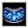

砕氷の砲弾 Splinterfrost Shell
英語版 CrawlWiki の記事「Splinterfrost Shell」(0.33 向け、2025-10-26 版)の翻訳です。原文の著者は編集履歴をご覧ください。
この記事は 0.33 の時点の内容で、最新の 0.34 とは違うところがあるかもしれません。
|  砕氷の砲弾 | |
|---|---|
| レベル | 7 |
| 系統1 | 鍛造術 |
| 系統2 | 氷の魔術 |
| 入手元 | 氷造形の魔法書 二元の魔法書 |
| 詠唱の騒音 | 7 |
| 呪文の騒音 | 0 |
| 威力の上限 | 200 |
| 射程 | 1 |
| フラグ | 自分は対象外(Not self)、対象指定(Target) |

| 術者の周りに半円状に、強化された氷の砕けやすい殻を組み立てる。可能であれば、場所を空けるためにモンスターを押しのける。
この防壁は頑丈で、一部が破壊されるたびに砕けて氷の飛び道具の一斉射撃となり、それを破壊したものへ撃ち出される。 術者が防壁から離れすぎると、防壁は急速に溶けていく。 |
砕氷の砲弾はレベル7の氷の魔術/鍛造術の呪文だ。術者の周りに半円状に氷片のバリケードを4つ作り、そこにいるモンスターは押しのける。バリケードは壊されると氷の矢を放つ。
基本情報
氷片のバリケードを4つ作り出す。バリケードがモンスターに壊されると、壊した相手を狙って貫通する氷の矢を撃つ。矢は味方に当たりそうなところで止まる。
バリケードの HD は 10 + pow/20。[1]矢のダメージは 3d(8 + HD/11)。[2]
バリケードから2マスより遠くへ離れると、バリケードは溶けていく。
戦略
主に守りのための呪文で、間合いを空けたり引き撃ちをしたりするのに使える。業火の迫撃砲、オゾクブの瞬間凍結、永久凍土の噴出のように、隣のマスが空いていてほしい呪文と組み合わせると効果的だ。
変更履歴
- この呪文は0.33で追加された。
出典
- ↑ spl-summoning.cc:4591 (0.33.1)
- ↑ zap-data.h:2595 (0.33.1)